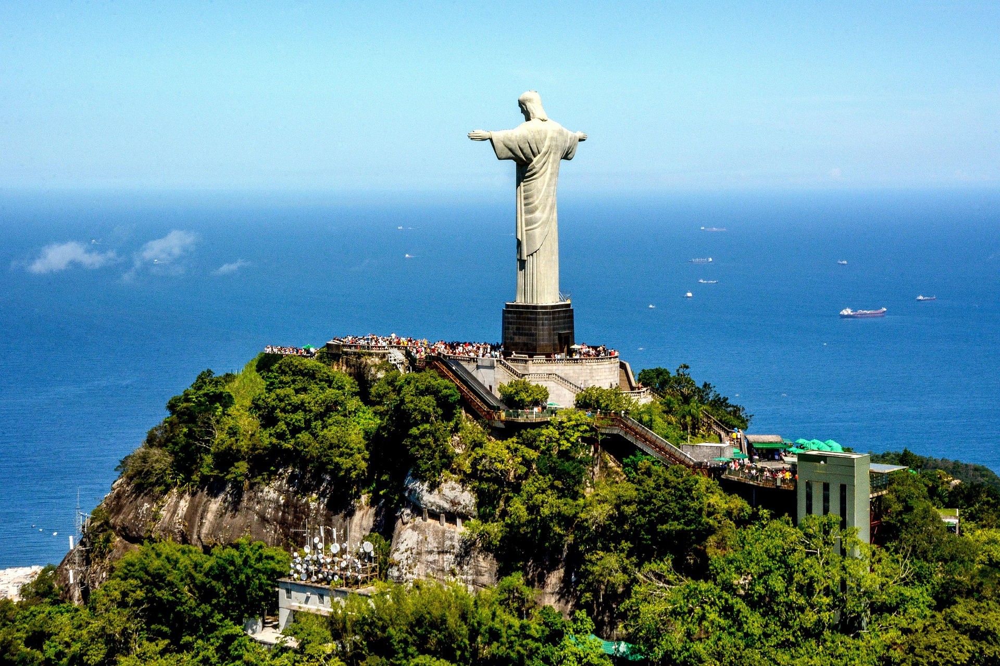
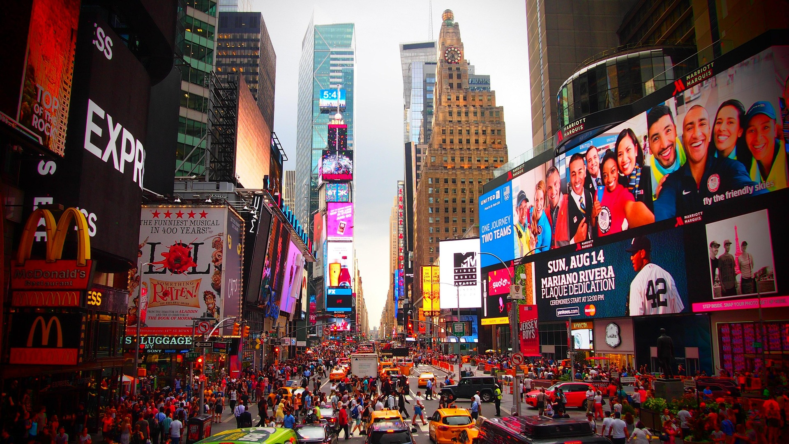

Cristo Redentor, Brasil
Cristo Redentor é uma estátua que retrata Jesus Cristo localizada no
topo do morro do Corcovado, a 709 metros acima do nível do mar,
dentro do Parque Nacional da Tijuca. Tem vista para parte
considerável da cidade brasileira do Rio de Janeiro, sendo a frente
da estátua voltada para a Baía de Guanabara e as costas para a
Floresta da Tijuca. Feito de concreto armado e pedra-sabão, tem
trinta metros de altura (uma das maiores estátuas do mundo), sem
contar os oito metros do pedestal, sendo a mais alta estátua do
mundo no estilo Art Déco.

Times Square, Estados Unidos da América
Famosa pelos seus prédios com telões, a Times Square é a denominação
da área formada na confluência e cruzamento de duas grandes avenidas
da cidade de New York, Estados Unidos; podendo ser definida como uma
grande praça ou largo, composta por vários cruzamentos e esquinas. O
local possui uma das maiores concentrações da indústria do
entretenimento no mundo, além de grandes lojas de famosas marcas
internacionais, e obviamente congrega inúmeros anúncios luminosos de
publicidade que durante a noite tornam-se uma atração peculiar.

Machu Picchu, Peru
Machu Picchu é uma antiga cidadela inca localizada na Cordilheira
dos Andes, no Peru, a aproximadamente 2.430 metros acima do nível do
mar. Conhecida como a "Cidade Perdida dos Incas", ela é um
Patrimônio Mundial da UNESCO e uma das Sete Maravilhas do Mundo
Moderno. É famosa por sua impressionante arquitetura de pedra, com
muros, terraços e rampas que parecem esculpidos na paisagem.

Chichén Itzá, México
Chichén Itzá é um complexo mundialmente conhecido de ruínas maias na
Península de Iucatão, no México. A enorme pirâmide com degraus é
conhecida como El Castillo e domina a cidade antiga de 6,5
quilómetros quadrados, que prosperou de 600 d.C. até ao século XIII.
As esculturas gráficas de pedra sobreviveram nas estruturas, como no
campo de jogo de bola, no Templo dos Guerreiros e na Parede das
Caveiras. Os espetáculos de som e luz à noite iluminam a geometria
sofisticada dos edifícios.